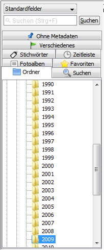
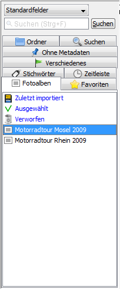
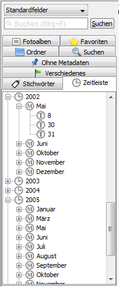
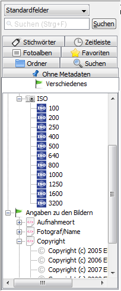

Screenshots: Selections
Selections are predefined sets of images, for example, images of a folder, images with a specific keyword, a photo album or images taken by a specific camera. The selections are on the left side in JPhotoTagger's main window.
Folders and favorite folders

Keywords (tags) and photo albums (image collections)

Saved searches and timeline

Miscellaneous metadata and missing metadata


Author: Elmar Baumann
Status of this document: 2010-03-17